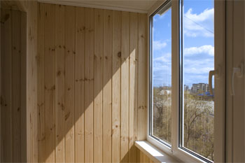

Главная
Главная"Добро пожаловать на Balkon48"
|
 Деревянная вагонка считается самым экологически чистым материалом для отделки балконов и лоджий. Дерево создает тепло и уют, которых иногда так не хватает в городских квартирах. К тому же это красиво. А если вагонка высокого класса – это еще и престижно. При обшивке балкона деревянная вагонка крепится строго вертикально на специальную деревянную рейку. Рейка крепится к стене при помощи саморезов с интервалом 50 см между собой. Технология крепления деревянной вагонки к рейке такова, что все гвозди остаются незаметны. Точно подогнанная одна к другой, хорошо просушенная и обработанная деревянная вагонка сосновых пород обладает достаточной прочностью. Даже через несколько лет такая обшивка балкона не изменит ни цвет, ни первоначальную форму и прослужит Вам очень долго. В завершении отделки балкона или лоджии изготавливаются различные шкафчики и полочки, где вы сможете хранить вещи, которые не нашли места в квартире. Все это изготавливается также из вагонки и придаст Вашему балкону (лоджии) завершенный гармоничный вид и сделает его более функциональным. |
|
Узнать примерную стоимость обшивки балкона можно по телефонам:
|
 +7(909)221-88-30, +7(904)295-04-48
+7(909)221-88-30, +7(904)295-04-48{kind=link}